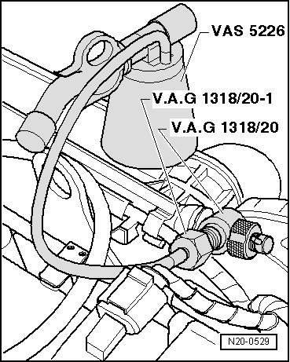
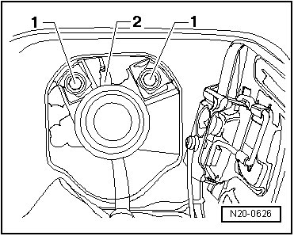
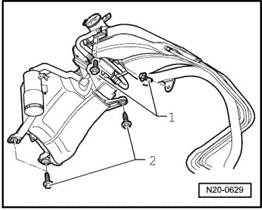
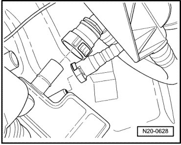
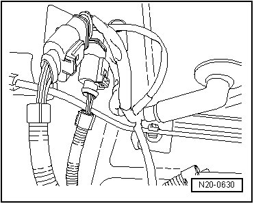

Fuel Tank with Attachments
Fuel Tank with Attachments
CAUTION!
During all repair procedures on the fuel tank, be aware of the following:
• Route all the various lines (e.g. for fuel, EVAP system, or vacuum) and electrical wiring so that the original routing positions are restored.
• Make sure that the ground (-) strap between the fuel filler tube and body is securely fastened, to prevent electrostatic charging.
• Ensure sufficient clearance to all moving or hot components.
Special tools, testers and auxiliary items required
• Wrench (T10202)
• Torque wrench (5 to 50 Nm) (V.A.G 1331)
• Torque wrench (40 to 200 Nm) (V.A.G 1332)
• Engine/transmission jack (V.A.G 1383/A)
• Fuel extracting device (VAS 5190)
• Diesel extractor (VAS 5226)
• Adapter (V.A.G 1318/20)
• Adapter (V.A.G 1318/20-1)
Requirements
• The fuel tank must be drained --> [ Fuel Tank, Draining ] Procedures.
• Fuses - 13 - and - 14 - - arrows - must be removed from their sockets.

Removing
- Read safety precautions before beginning work --> [ Safety Precautions ] Safety Precautions.
First, relieve fuel pressure as follows:
- Screw adapter (V.A.G 1318/20-1) on to adapter (V.A.G 1318/20).

- Turn valve on T-piece - arrow - counterclockwise until completely open.
- Remove breather valve.
- Screw adapter (V.A.G 1318/20) hand-tight on to bleeder valve.

- Connect hose from diesel extractor (VAS 5226) as illustrated.
- Turn valve (at T-piece) clockwise into bleeder valve to stop.
When fuel pressure has been released:
- Unscrew adapter (V.A.G 1318/20) from bleeder valve.
- Install cover onto bleed valve.
- Remove mufflers and mountings --> [ Muffler with Mounts, Assembly Overview ] Removal and Replacement.
- Remove driveshaft.
- Remove rear axle.
- Open fuel flap and remove fuel tank cap.
- Pull rubber gasket off filler neck.
- Remove securing bolts - 1 - on filler neck and pull off ground wire - 2 -.

- Remove wheel housing liner, right rear.
- Unbolt cover plate - arrow -.

- Unclip fuel tank breather lines at securing clip attached on longitudinal member.

- Remove securing bolts for filler pipe - 1 - and EVAP canister - 2 - in wheel housing.

- Bend filler neck slightly downward and pull off breather line connections to EVAP canister.

• Release connection by pressing button on hose coupling.
- Disconnect 3-pin connector from fuel system Leak Detection Pump (LDP) (V144) as well as 2-pin connector from EVAP canister purge solenoid valve (N115).
- Disconnect ground wire clipped to EVAP canister and remove canister.
- Separate fuel pump connectors, on left next to fuel tank.

- Remove securing straps with covers on left and right below fuel tank.
- Support fuel tank using engine/transmission jack (V.A.G 1383 A) and remove securing strap at center of fuel tank.
- Carefully lower fuel tank about 30 cm.
CAUTION!
Fuel supply lines are under pressure! Wear protective goggles and protective gloves to avoid damage and contact with skin. Before removing from hose connection wrap a cloth around the connection. Then release pressure by carefully pulling hose off connection.
- Reach between fuel tank and vehicle underbody and pull fuel supply and breather lines off sender flange. When pulling off fuel supply line, hold a cloth around fuel supply line.
• This step eliminates having to cut open the carpeting in the vehicle interior in the vicinity of sender flange cover.
- Lower fuel tank.
Installing
Installation is performed in the reverse order of removal, noting the following:
• Connections for breather and fuel lines must engage audibly when joined.
• Make sure ventilation and fuel lines are not kinked when installed.
• Secure fuel hoses with spring-type clamps.
• Ensure fuel hoses are seated securely.
• The ground strap at the fuel filler tube - 2 - must be securely connected to the body.
• Before fastening the fuel tank, check that the supply and ventilation lines are still clipped onto the fuel tank.